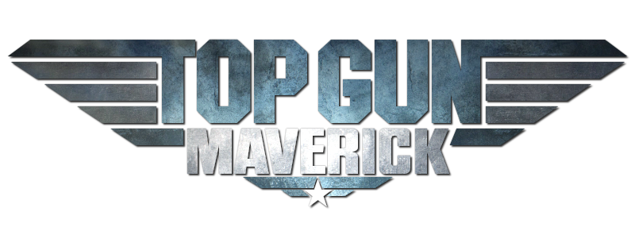

"[...] 'We just started talking,' Cruise says. 'And I realised that there were things that
we could accomplish cinematically. And I started getting excited about this big
challenge of, "How do we do it?" So I said to Jerry, "I’ll do it if…" meaning, I’m not
going to do the CGI stuff [...]"
-- from interview with Empire
Read more at EmpireTom Cruise stars in a new movie every aviation fan has been waiting for since Hayao
Miyazaki's 2014 film The Wind Rises. Like Miyazaki's aerial adventure, many
expect Cruise's Top Gun: Maverick to be a fine film in itself, but perhaps fall
short of the legacy it follows.
The film is currently set to premier on December 23rd according to a recent tweet from
"Maverick" himself. Directed by Joseph Kosinski and starring much of the original cast
like Tom Cruise and Val Kilmer, this film will be sure to grab any fan by the collar and
make them feel the need.. the need for speed.